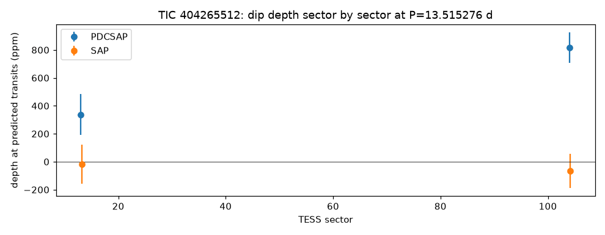
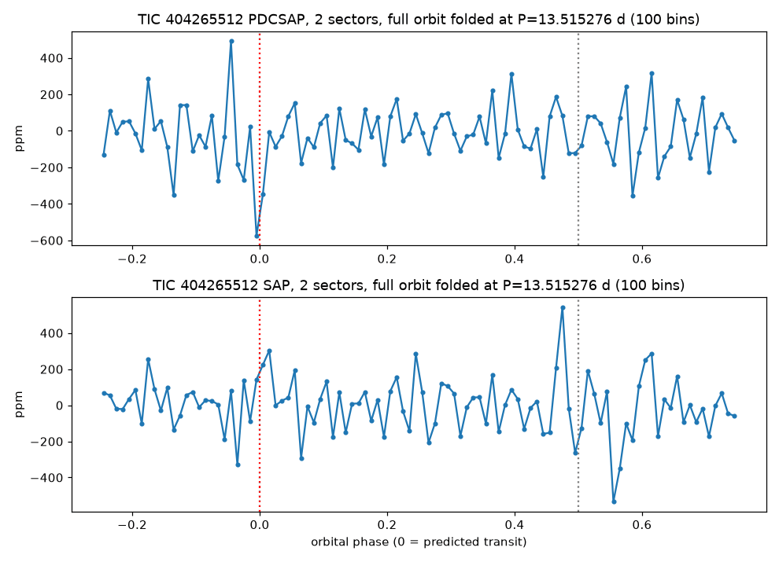

TRANSMISSION #024 ·
Deep dive on TIC 404265512: a missing transit at the TESS orbit period
Follow-up on TIC 404265512, from the first sector 104 draw.
The star is a magnitude 10.9 K dwarf, about 0.7 times the Sun's size. The batch search found a 1,036 ppm (0.1%) dip every 13.515 days, four hours long, signal-to-noise 11.1. That would be a world about 2.5 Earth radii. The warning signs were there from the start. TESS only watched this star in sectors 13 (2019) and 104, so there were just three transits. The period sits within 1.5% of TESS's own 13.7-day orbit, a well-known source of fake signals, and Gaia flags the star as variable.
Looking at each predicted transit separately, the first one in sector 13 isn't there (32 ± 238 ppm). The other three measure 1,361, 1,404 and 1,504 ppm. Sector by sector, the cleaned light curves give 337 ppm in sector 13 and 818 ppm in sector 104, and the raw light curves show nothing in either (-18 and -66 ppm). A real planet would block the same amount of light every time, in both versions of the data.


The deep TLS search on both sectors didn't recover 13.5 days. Its only signal was 6.75 days, half the batch period and half the TESS orbit, at signal-to-noise 5.7. The nearest plausible neighbour, a G=13.0 star 73 arcseconds away, would need a 0.5% eclipse, and its own light curve gives contradictory answers from sector to sector (0.34%, 0.13% and -0.20%), so it neither explains nor rules anything out. ExoFOP and the NASA Exoplanet Archive have nothing on or near the star.
A missing transit, a period locked to the spacecraft's orbit and no trace in the raw flux all point to systematics. Marked probably false positive.
Every signal, explained (1)
Tap a row to open it. Sorted by signal strength.
TIC 404265512#1Passed the robots, failed the eyeball 6.755 d · 577 ppm · SNR 5.7 · ~1.9 R⊕
This one got through every automatic check, which is rare. Then Kepler looked at it by eye and followed it up, and it didn't hold up.
- Suspicious period. It sits close to a period that TESS itself produces (its 13.7-day orbit, half of that, or one day), so the spacecraft could be the source.
Kepler’s eyeball check: only signal of the deep search is half the 13.5 d batch period and half the TESS orbit, SNR 5.7 well below ~10, odd/even 2.7 sigma; batch 13.5 d signal not recovered; star has only S13 and S104; actual folder results/deep_TIC404265512 (batch_folder=results/deep so the Kepler Log matches deep runs)
Candidates table
| TIC | # | Status | Vet | P (d) | Depth (ppm) | Dur (h) | SNR | SDE | N | R⊕ | Flags |
|---|---|---|---|---|---|---|---|---|---|---|---|
| 404265512 | 1 | NEW_CANDIDATE | PASS | 6.7546 | 577 | 1.77 | 5.7 | 11.0 | 6 | 1.9 | NEAR_SYSTEMATIC_PERIOD |
Diagnostic plots
Full pipeline report
Planet-hunter report
Generated 2026-11-03 10:17 UTC by hunt.py v1.0.0.
Stars processed
1 stars total: 1 done
Signals found: 1 (1 new and passing vetting, 0 new but failing vetting, 0 matching known planets/TOIs/CTOIs).
New candidates that passed the automatic checks
These are the ones to look at first. Passing the automatic checks does not make something a planet. Open each plot and follow the eyeball checklist in BOT_BRIEF.md before telling anyone about it.
| TIC | # | P (d) | depth (ppm) | dur (h) | SNR | SDE | N tr | Rp est (Re) | flags | note | plot |
|---|---|---|---|---|---|---|---|---|---|---|---|
| 404265512 | 1 | 6.75464 | 577 | 1.77 | 5.7 | 11.0 | 6 | 1.85 | NEAR_SYSTEMATIC_PERIOD | no catalogued planet/TOI on this star | png |

New signals that failed vetting
Usually eclipsing binaries, stellar variability or instrument noise. Worth a glance, rarely more.
none
Signals matching something already catalogued
A good sanity check: if the pipeline recovers known planets, it is working.
none
Stars with errors
none
Caveat
A NEW_CANDIDATE here is only a candidate. Most automatic detections in TESS data turn out to be eclipsing binaries (often a nearby star blended into the same pixels), stellar activity or systematics. Confirming a planet needs pixel-level checks, follow-up photometry, and usually spectroscopy. Promising, carefully checked signals can be shared on ExoFOP (as a CTOI) or with Planet Hunters TESS.